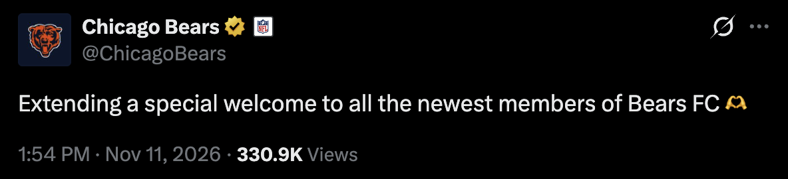
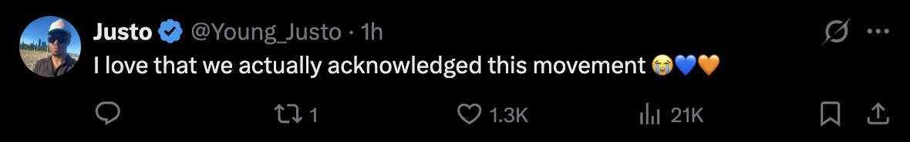
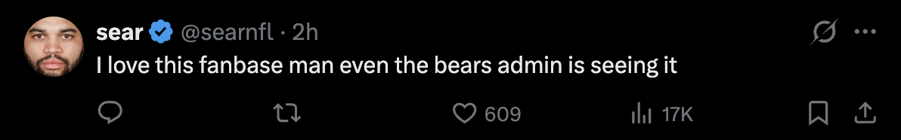
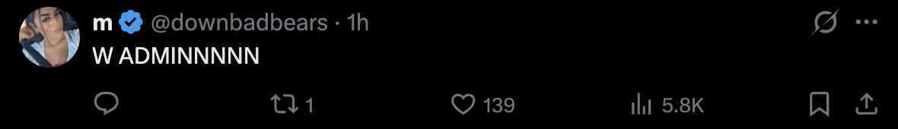
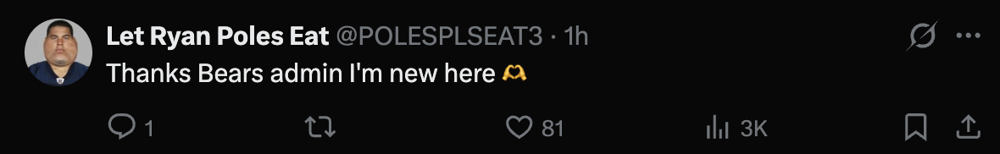
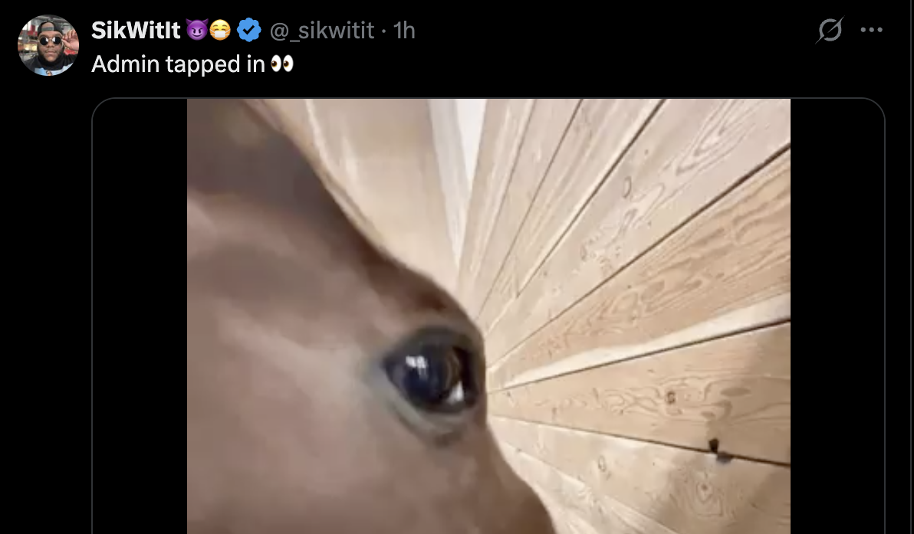

This article discusses suicide. If you or someone you know is struggling, call or text 988 in the U.S. or contact your local crisis line.
The Bears beat the Bucs 27–24 on Sunday night, but it came at a cost. The Bears' star wide receiver, Luther Burden, sustained a concussion in the second half. (Bears Wire)
As online communities are wont to do, Bears fans went en masse to X to search for "Burden" and "injury." Instead of an update, they found a teenager in Australia who felt like a burden and didn't want to be here anymore. What those fans did next, and what the Bears' official account said three days later, is one of the best lessons in community management I've seen.
It proves something I've believed for as long as I've done this work: the best community managers don't talk to a community, they're part of it. They just happen to be the member who holds the keys to the official account.
That distinction matters, because brand sentiment isn't built by campaigns. It's built in the small moments when a community does something on its own, and the brand shows it noticed. The message isn't "look at us," it's "we see you."
Pulling that off takes five things. If you're a CMO, this is the job description for whoever runs your community.
1. A superfan's voice
A true community manager is a fan of the product, or very good at playing one on TV. You want someone who can genuinely adopt the voice, persona, and language of a superfan. When the community has its own name for itself, its own jokes, its own way of talking, your community manager should already be fluent.
2. Deep product knowledge
Voice without substance is just a costume. Your community manager has to know everything about the product, so the community trusts them when it counts.
3. Listening that leads to responding
There are tons of great tools for aggregating mentions. But listening is only half the job. The other half is responding to what you hear.
Communities go on adventures together. Sometimes it's adopting a stranger. Sometimes it's correcting misinformation en masse, or defending the brand's honor in some half-serious online rivalry. Your community manager needs to know what's going on and be part of it.
4. PR judgment
They can't reply just for the sake of replying. They need a strong sense of PR and professionalism, so that when they do speak, it elevates the brand instead of hijacking the moment. Sometimes that means waiting, and sometimes it means saying less.
5. Surprise and delight
Acknowledging the community in public is only half of it. A great community manager also goes to the source and shows them some love, privately and personally. That might be a DM, a handwritten note, or a care package. Surprise and delight is one of the most powerful tools in a community manager's kit, because it turns a viral moment into something the person at the center of it will actually remember.
Put those five together, a superfan's voice, deep product knowledge, listening that turns into a response, the PR sense to know when and how to speak, and the instinct to surprise and delight the people at the heart of it, and you have the job description. This week the Chicago Bears showed us what it looks like when one person has all of them.
The proof: Bears FC
Here's how it unfolded. The post that came up in those searches was from Yuri, who was essentially crying for help into the void of X. With only a handful of followers, this was just a random kid with a phone in their hand and a heavy heart. (WGN, CBS Chicago)
The first reply was the kind of thing that gives sports Twitter its reputation: "Shut up, we are looking for burden injury updates." (CBS Chicago)
Then the community corrected itself. Fans told that person "that's not cool," and turned to Yuri: "life is worth living homie, I promise." "People love you. And now Chicago Bears fanbase loves you too… WELCOME TO THE FAMILY." (CBS Chicago, WGN)
Yuri had "no idea who the Chicago bears are," but that didn't matter to anyone in the thread. The post was seen more than six million times, and Yuri went from a handful of followers to around 10,000 in two days, with strangers in Chicago wishing them luck on school tests and offering tickets to a game. (WGN, CBS Chicago)
The story didn't stay in Chicago, either. As one fan on Reddit put it, the support came from "Bears fans, as well as non-Bears supporters." (r/CHIBears) The FC was growing in real time, well past one kid in Australia.
That's a community on an adventure. And on Wednesday, the official account joined it by welcoming not one new member, but all of them:

The restraint in that post matters. Loyola social work professor Jonathan Singer made a point in the CBS coverage that's worth hearing as a marketer: strangers online aren't responsible for saving someone's life, and a direct message is often the better first move. (CBS Chicago) The Bears didn't make themselves the hero of the story, and they didn't tag or name the teenager at the center of it. They let the fans be the story.
And the public post wasn't the whole response. Later that day, Yuri posted, in all caps, "THE BEARS THEMSELF DMED ME??" The club reached out privately and is sending Yuri a care package. That's the part most brands skip. The public post acknowledged the community, and the private message showed love to the person at the center of it, away from the spotlight.
Part of the community, not a voice over it
That post doesn't read like a brand speaking to its fans. It reads like one more member of Bears FC saying welcome, which is exactly why it landed.
That's what community management is when it's done right. You're not managing the community from above, you're in it. You were there Sunday night refreshing for the Burden update like everyone else, you saw the bad reply, and you watched the fans turn it around on their own. When it was time, you said the thing every fan in that thread was already feeling, just from the account with the logo on it.
I've been in exactly that seat more times than I can count. So to whoever is running community for the Chicago Bears: I see you too. You represented our field with real aplomb, and I'm proud of you.
Bear down.
The fans noticed, too. They shouted out the person behind the logo.





Replies to the @ChicagoBears post, November 11, 2026.
If you want to talk about who's in that seat for your brand, that's the work we do at Humans and Robots.